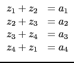

Si rref a deux paramètres, le deuxième paramètre est un
entier k qui permet de ne faire Gauss-Jordan que sur les k premières
colonnes ou est l'option conserver_pivot ou keep_pivot.
On tape :
rref([[3,1,-2,1],[3,2,2,2]],1)
On obtient :
[[3,1,-2,1],[0,1,4,1]]
L'option conserver_pivot ou keep_pivot permet de ne pas diviser
par les pivots, cela pour éviter de diviser par des pivots nuls.
par exemple,
pour résoudre le système :

On tape :
A:=syst2mat([z1+z2=a1,z2+z3=a2,z3+z4=a3,z4+z1=a4],[z1,z2,z3,z4])
puis,
rref(A,keep_pivot)
ou bien, on tape directement :
rref([[1,1,0,0,-a1],[0,1,1,0,-a2],[0,0,1,1,-a3],[1,0,0,1,-a4]],keep_pivot)
On obtient :
[[a1-a2+a3-a4,0,0,a1-a2+a3-a4,0],[0,a1-a2+a3-a4,0,-a1+a2-a3+a4,0],[0,0,a1-a2+a3-a4,a1-a2+a3-a4,0],[0,0,0,0,a1-a2+a3-a4]]
Remarque
Lorsque le nombre de colonnes est égal au nombre de lignes +1
rref ne divise pas par le pivot de la derniere colonne, par exemple,
pour résoudre le système :
On tape :
A:=syst2mat([z1+z2=a1,z2+z3=a2,z3+z4=a3,z4+z1=a4],[z1,z2,z3,z4])
rref([[1,1,0,0,-a1],[0,1,1,0,-a2],[0,0,1,1,-a3],[1,0,0,1,-a4]])
On obtient :
[[1,0,0,1,0],[0,1,0,-1,0],[0,0,1,1,0],[0,0,0,0,a1-a2+a3-a4]]
Ainsi on peut savoir que si a1-a2+a3-a4 n'est pas nul, il n'y a pas de
solution.
Puis, on tape :
rref([[1,1,0,0,-a1],[0,1,1,0,-a2],[0,0,1,1,-a3],[1,0,0,1,-a4]],3)
On obtient :
[[1,0,0,1,-a1+a2-a3],[0,1,0,-1,-a2+a3],[0,0,1,1,-a3],[0,0,0,0,1]]
ou encore si on remplace a4 par a1-a2+a3, on tape :
rref([[1,1,0,0,-a1],[0,1,1,0,-a2],[0,0,1,1,-a3],[1,0,0,1,-a1+a2-a3]])
On obtient :
[[1,0,0,1,-a1+a2-a3],[0,1,0,-1,-a2+a3],[0,0,1,1,-a3],[0,0,0,0,0]]
Donc, les solutions lorsque a1-a2+a3-a4=0 sont :
z1=a1-a2+a3-z4, z2=a2-a3+z4, z3=a3-z4, z4=z4